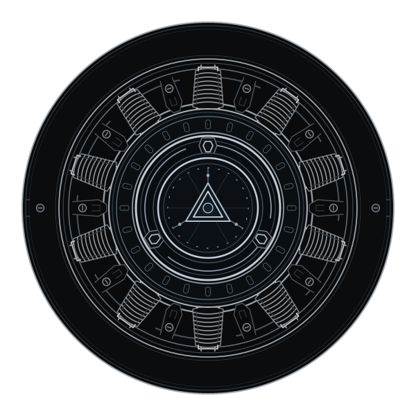
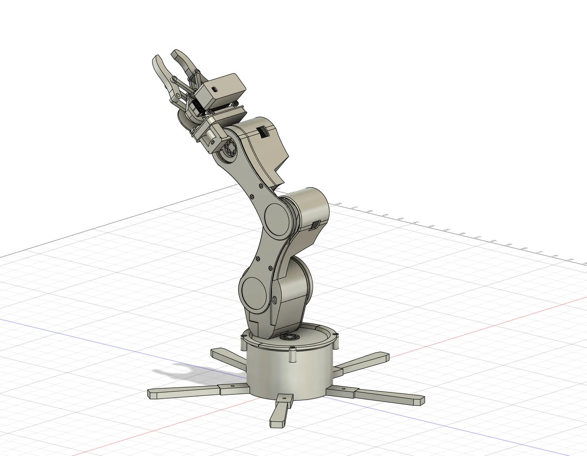
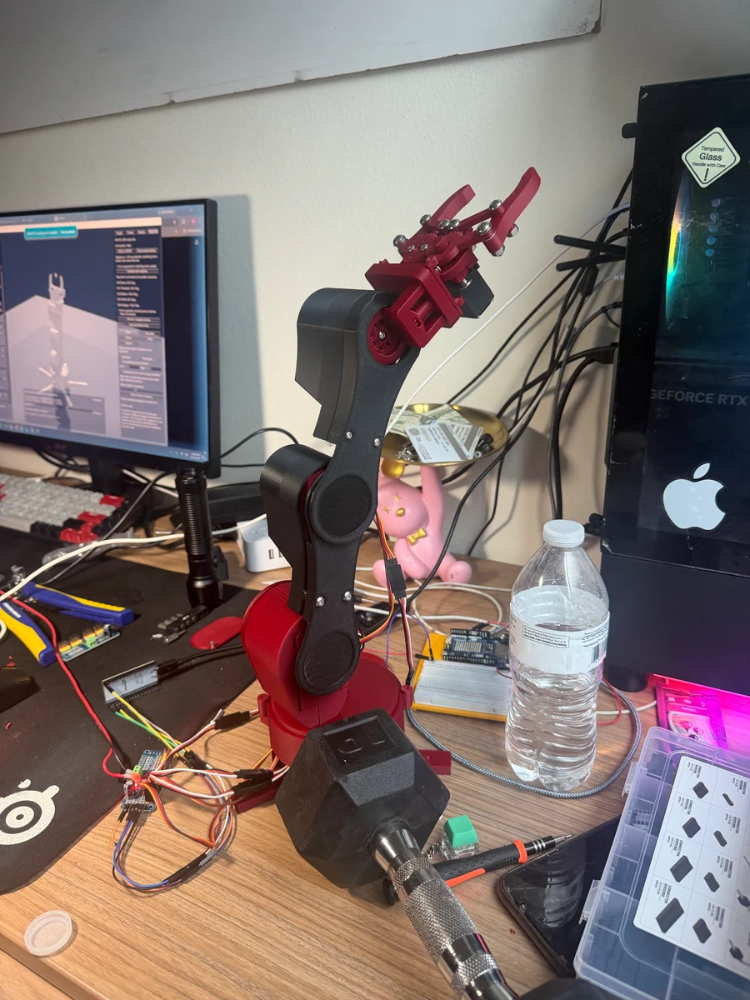
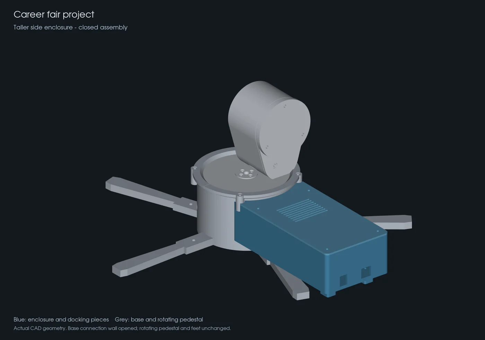

I’m an electrical engineering student at the University of Houston, Class of 2029. I enjoy building things from the ground up, working with my hands, and figuring out how to make things work.
I chose electrical engineering because I enjoy building things and understanding what makes them work. I’m particularly interested in robotics and how electronics, software, and physical design come together to create a working system. Building and troubleshooting give me the opportunity to turn that curiosity into practical experience to understand a problem, test an approach, and improve what I’ve made.
Iron Man is a big part of what inspires me: his gadgets, his workshop, and the way he approaches problems. I relate to his independence and the instinct to find a way forward—even if that means questioning the problem itself.
I believe there’s always a way. If I can imagine it, I want to figure out how to make it real.
UH
University of Houston
Electrical Engineering
CLASS OF 2029

Projects
ROBOTICS / EMBEDDED SYSTEMS2026
Servo arm. From design to motion.
A printed arm with five servo channels, an ESP32 control bridge, and a Unity interface for joint control, inverse kinematics, and motion recording.

Servo arm during CAD development01 / 05
Wrist and gripper inspection during CAD development02 / 05
Unity joint-control interface in simulation mode03 / 05
FROM CONCEPTto the workbench.DESIGN. BUILD. ITERATE.

Physical prototype during development04 / 05

Revised enclosure CAD: 43.6 mm internal height05 / 05
The engineering storySITUATION → RESULT +
S
Situation
The printed arm needed its mechanical assembly, servo electronics, and digital model to work together. Early iterations exposed attachment-fit problems and a mismatch in servo-driver timing.
T
Task
Create one interface for five servo channels, make the printed connections consistent, and record complete movements instead of working through eight fixed recording stages.
A
Action
Integrated Unity with the ESP32 and PCA9685 over USB, corrected the driver’s oscillator setting from 25 to 27 MHz, revised seven 3D-printable parts for consistent M2 passages, and added continuous motion recording.
R
Result
Connected five servo channels to the Unity controls and expanded recording in Unity from eight fixed stages to takes up to 10 minutes. A separate enclosure revision increased CAD internal height from 22.6 to 43.6 mm (about +93%), preserving 45 other components.
Failed prototypes
Earlier designs, and part of the process of getting here.